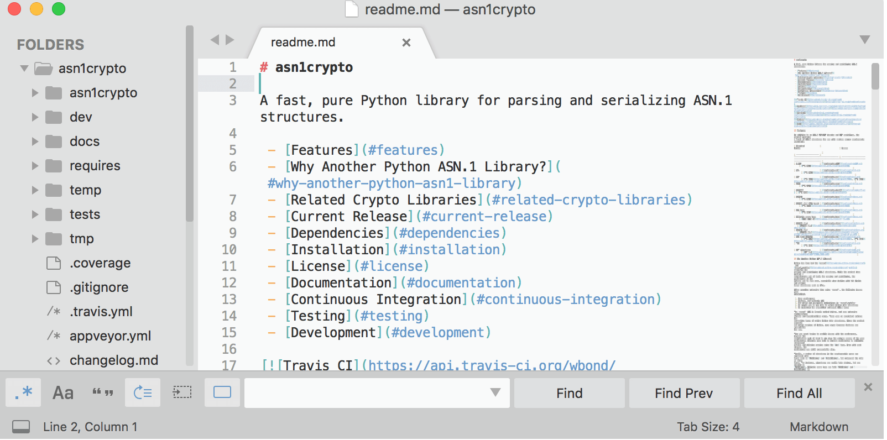

- Download
- Buy
- News
- Forum
- Support
October 6, 2017 by Will Bond
With the release of Sublime Text 3.0, we refreshed the visual design for the application, icon, and website. The new icon ties into the colors and shapes of the old, but is more abstract and fits well with other modern applications. The updated Default theme is still distinctly Sublime Text, but has full high DPI support, and works well with both dark and light color schemes. The three new color schemes take advantage of the work that has gone into modernizing and enhancing the syntax definitions included with Sublime Text.
(Old) Default theme, IDLE color scheme

(New) Default theme, Sixteen color scheme

As well as an overhaul of the default theme, we've also include a new theme, Adaptive, which uses the colors of your color scheme and applies variations of them to the side bar and various panels. The new color scheme setting accent is used to highlight selected options in the find panel, and to highlight modified tabs. Furthermore, on recent versions of macOS the title bar is also styled by the Adaptive theme to follow your selected color scheme.
The result is a theme that acts as if it was custom designed for your color scheme. Check out this sample of Adaptive in action:
To try Adaptive out for yourself, open the Command Palette and type Select Theme. Once you've picked Adaptive, use the Select Color Scheme command to preview the available color schemes.
Probably the best part is that all of the power of the Adaptive theme is available for any theme to use. Additionally, we wrote up full documentation about all of the theme engine features and syntax. Having comprehensive documentation will hopefully make theming accessible to a much wider audience. If you are looking for help in customizing a theme, or creating your own, drop by the forum or ask some questions on the Discord server.
September 13, 2017 by Jon Skinner
Compared to the last beta, 3.0 brings a refreshed UI theme, new color schemes, and a new icon. Some of the other highlights are big syntax highlighting improvements, touch input support on Windows, Touch Bar support on macOS, and apt/yum/pacman repositories for Linux.

I wanted to highlight some of the changes from Sublime Text 2 here, however it's surprisingly hard: virtually every aspect of the editor has been improved in some way, and even a list of the major changes would be too long. If you'd like to see the full list of changes, the team has made a dedicated page for them.
Certainly there are big features that 3.0 has: Goto Definition, a new syntax highlighting engine, a new UI, and an expanded API. However the difference is frequently felt in the hundreds of improvements that don't warrant being featured on their own: spell checking works better, automatic indentation does the right thing more often, word wrapping handles source code better, high DPI screens are properly supported, and Goto Anything is smarter. There's too much to list, but combined the difference is night and day.
One of the areas I'm especially proud of in Sublime Text 3 is performance: it's significantly faster than Sublime Text 2 along every axis. Startup is faster, opening files is faster, and scrolling is more efficient. While it's a much larger application than 2, it feels leaner.
If you purchased your Sublime Text license from February 2013 onwards, then it's already valid for Sublime Text 3.0. If your license key is for Sublime Text 1 or 2, then you can purchase an upgrade.
From myself and the team at Sublime HQ, we're very proud of Sublime Text 3.0, and we hope you enjoy it as much as we do. Onwards to 3.1!
Downloads and a full changelog are available on the Sublime Text 3 page.
September 22, 2016 by Jon Skinner
Sublime Text 3, Build 3124, is out now. Downloads and the full changelog are on the Sublime Text 3 page.
Build errors are now shown inline, at the location the error occurred. This is done via the new Phantoms API, which allows HTML annotations to be added to the text buffer by plugins:

Inline build errors can be disabled via the show_errors_inline setting.
Also new in 3124 is Show Definition, which will show where a symbol is defined when hovering over it with the mouse. This makes use of the new on_hover API, and can be controlled via the show_definitions setting:

After navigating to a definition, you can go back to where you were via the Goto/Jump Back command.
3124 also features side-by-side preferences editing, a menu entry to install Package Control, performance improvements, a whole host of Syntax Highlighting improvements, minihtml improvements, and expanded API Documentation.
With these latest changes, Sublime Text 3 is almost ready to graduate out of beta, and into a 3.0 version. If you want to track the progress between now and then, the Dev Builds are the way to go. As usual, if you have any questions or comments, please head over to the forum.
February 9, 2016 by Jon Skinner
Build 3103 is out now. Downloads and a full changelog are on the Sublime Text 3 page.
This is the first build available to everyone with the new syntax definition format, .sublime-syntax. This allows for richer syntax highlighting and better performance. 3103 also features a custom regex engine that significantly speeds up file loading and indexing.
The Packages shipped with Sublime Text are now on GitHub, and 3103 incorporates many community provided improvements to them, especially to HTML, CSS and JS.
I'd also like to welcome prominent community member and Package Control mastermind Will Bond to the Sublime HQ team.
If you have any questions or comments about 3103, you may want to head over to the new Forum.
March 25, 2015 by Jon Skinner
Some of the core features in Sublime Text 3 are Goto Definition and Goto Symbol in Project. Both of these work by indexing the files in the current project to determine where each symbol is defined.
When indexing is in progress, several low priority background processes will be launched to do the work, and a progress indicator will be shown on the status bar. In general, even for large projects, indexing should take only a few seconds, and be unobtrusive.
However, things can go wrong, so if you're seeing high CPU usage in Sublime Text 3, then file indexing is the first thing to look at. There are two things that can cause excess CPU usage from the indexing:
To see when files are being indexed, you can enter sublime.log_indexing(True) in Sublime Text's console. This will trigger Sublime Text to start logging relevant information whenever it indexes files.
To disable file indexing altogether, you can set the index_files setting to false.
March 24, 2015 by Jon Skinner
Build 3080 is now available, with many fixes, improvements and new features. Full details, and downloads, are on the Sublime Text 3 page.
Sublime Text 3, while still technically in beta, is the recommended version of Sublime Text to use: compared to Sublime Text 2, it's faster, more polished, and of course, has a lot of extra functionality. Download it now and give it a try!
There will be more Sublime Text 3 builds coming in the near future. If you're a registered user, you can get early access by using one of the Dev Builds. New dev builds are announced and discussed on the Forum - there's generally a new one each week.
August 27, 2014 by Jon Skinner
Build 3065 is now available. Full details, and downloads, are on the Sublime Text 3 page.
December 18, 2013 by Jon Skinner
Build 3059 is now available. Full details, and downloads, are on the Sublime Text 3 page.
June 28, 2013 by Jon Skinner
Build 3047 is now available to both registered users and the general public. Build 3047 is the fastest, most stable, most polished version of Sublime Text yet.
New in 3047 is High DPI support for Windows and Linux, as well as improved file change detection, smarter atomic save, improved rendering performance and many bug fixes. The full list of changes is on the Sublime Text 3 page.
If you're coming from Sublime Text 2, some of the core features in Sublime Text 3 are:
There's been hundreds of smaller improvements to almost every aspect. There's some more details in the original announcement.
You can download Build 3047, as well as see a full list of changes, at the Sublime Text 3 page.
May 10, 2013 by Jon Skinner
Build 3033 is now available for registered users. The focus for 3033 has been on general polish, and cleaning up a few loose ends. It shouldn't be too long now until the first public beta for Sublime Text 3.
The full list of changes is available on the Sublime Text 3 page.
Subscribe
Sublime HQ Pty Ltd
Sydney, Australia
Twitter: @sublimehq